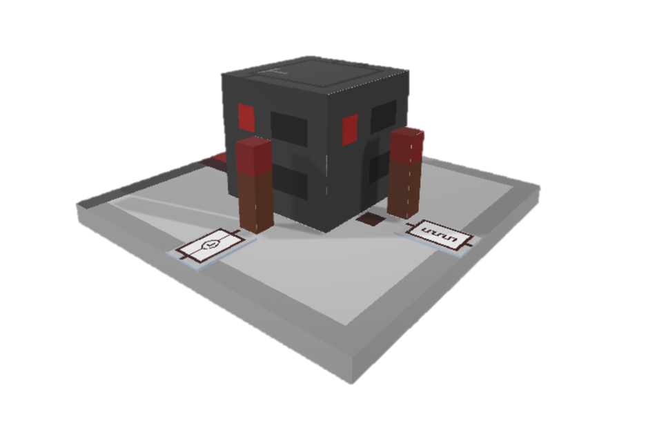

Fortschritte

Beispiel: Der schimmernde rote Diamant
Beispiel: Lass das Abenteuer beginnen.
Beispiel: Das Herz der Mod.
Beispiel: Sammler.
Die Modifikation erweitert auch die Fortschritte, die man wie in Minecraft-Vanilla erreichen kann um einen weiteren Tab. Man erreicht die erste Übersicht, wenn man ein Standard-Erweiterungskarte einsammelt. Die Funktion der Fortschritte, funktionieren genauso, wie in Vanilla-Minecraft. Weitere Informationen findest du hier.
Inhaltsverzeichnis
| Rahmen | Beschreibung | |
|---|---|---|
| Ausstehend | Abgeschlossen | |
| Normaler Fortschritt | ||
| Ziel Fortschritt | ||
| Aufgaben Fortschritt | ||
Liste aller Fortschritte
Minekraft-Logik-Gatter

|
|
|||||
|---|---|---|---|---|---|
| Symbol | Fortschritt | Beschreibung | Vorgänger | Aufgabe | Datenwert |
|
|
Der schimmernde rote Diamant | Erweitere die Möglichkeiten von Redstone | - | Sammle einen Redstone auf | pmtinf:redstone |
|
|
Lass das Abenteuer beginnen | Der Kern der MLG-Modifikation | - | Erstelle eine Standard-Erweiterungskarte | pmtinf:standardcard |
| Starte mit dem Programmieren | Eröffnung neuer Möglichkeiten | Lass das Abenteuer beginnen | Erstelle einen Code-Block | pmtinf:codeblock_item |
|
| Die Custom-Kraft | Schreibe deine Logik-Formeln selbst | Starte mit dem Programmieren | Erstelle eine Custom-Erweiterungskarte in der Codebench | pmtinf:custom_item |
|
| Sammler | Eine Sammlung aus Karten | Die Custom-Kraft | Sammle alle 28 Erweiterungskarten. Hinweis: Die Custom-Erweiterungskarte muss beschrieben sein. | pmtinf:all_cards |
|
| Druck dir eine ... | Duplizieren um schneller voranzukommen | Starte mit dem Programmieren | Erstelle einen Drucker | pmtinf:printer_item |
|
|  | Lass uns ein Flip-Flop nutzen | Mal eine andere Art | Starte mit dem Programmieren | Platziere einen Flip-Flop-Block | pmtinf:ff_card |
|
|
Das Herz der Mod | Mache dir Logik zu Nutze | Starte mit dem Programmieren | Platziere einen Logik-Gatter-Hub | pmtinf:logic_block |
|
|
Ein Zauber aus Karten | Beschreibe Karten mit Logik | Starte mit dem Programmieren | Platziere einen Codebench | pmtinf:workbench |
| Du UND Ich | Mache dir die UND-Logik zu Nutze | Ein Zauber aus Karten | Erstelle eine UND-Logik-Karte in der Workbench | pmtinf:logic_card |
|
| ReSet - Denke neu | Mache dir die Reset-Logik zu Nutze | Ein Zauber aus Karten | Erstelle eine RS-Flip-Flop-Karte ohne Clock | pmtinf:ff_card |
|
| Versionsgeschichte der Java-Edition | ||||||||||
|---|---|---|---|---|---|---|---|---|---|---|
|
Diese Seite wurde zuletzt am 25.Mai.2020 um 09.26Uhr bearbeitet.